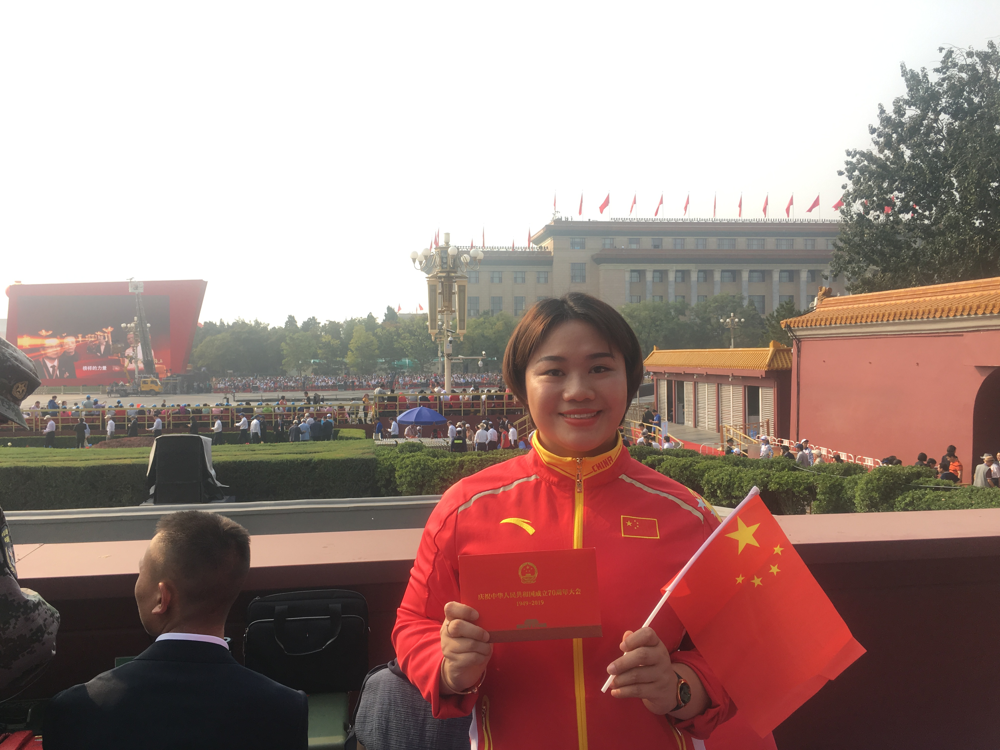
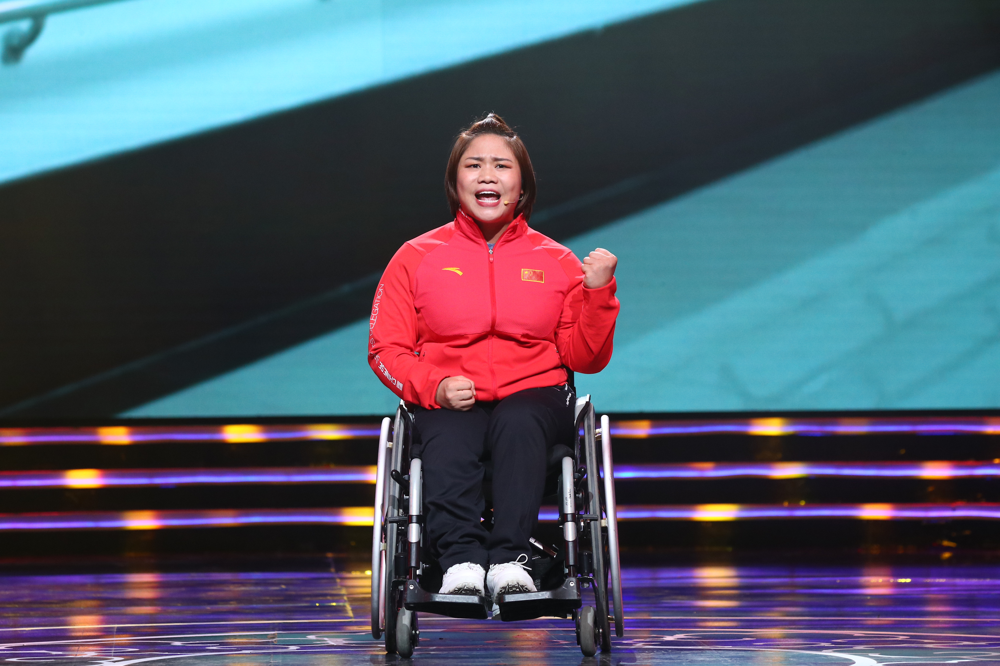
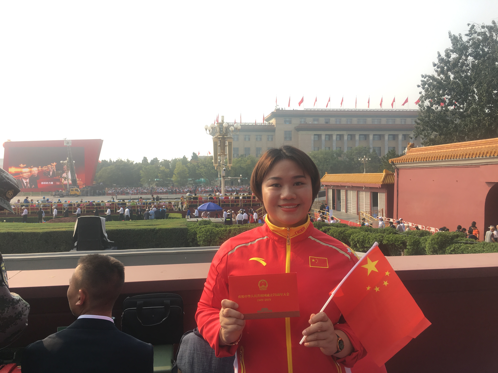
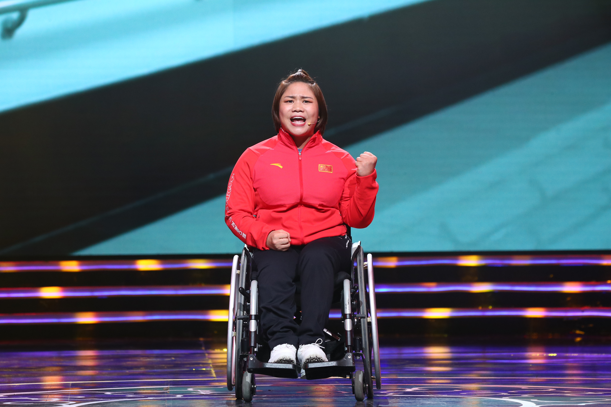

谭玉娇
 




她是个残奥冠军，她也是她自己
「我做到了。」她对全世界说。 2015年7月31日17时57分，2022冬奥会举办城市正式官宣落地北京。当时我国申奥唯一的竞争对手就是阿拉木图，那时，中国残疾人举重队正在阿拉木图比赛。谭玉娇获得亚洲残疾人举重锦标赛女子67公斤级亚洲组、公开组两块金牌，破世界纪录。 2016年，里约残奥会当地时间9月11日，首举130公斤，第二举135公斤，第三举138.5公斤，第四举终于打破了该级别世界纪录。26岁的谭玉娇以打破世界纪录的绝对优势，夺得了女子举重67公斤级金牌。 面对着飘扬的五星红旗，站在领奖台上，四周都是“长枪短炮”，她开心不已地喊出“我做到了。” “在举起最后一次重量之后是比较激动的，包括我在领奖的时候排队入场的时候也是，有一些热泪盈眶，再等到金牌真的挂在脖子上之后，那一刹那太开心了。” 从2013年接触女子举重至今，谭玉娇的运动生涯已然13年。人前的她不擅于流泪，不爱哭，但是领完奖回到里约残奥村里时，她还是偷偷哭了一场。 人们认识谭玉娇，或许从这枚金牌开始，也或许更早。 以下是谭玉娇部分自述。 2012年伦敦残奥会，我以一个非常好的状态入选伦敦残奥会代表团的名单。当时，我的运动能力已经超出了世界纪录将近8公斤。年轻气盛，对自己有很大的期许。 就在快临近奥运会三个月的时候，这根弦就绷断了。有一天，我做完准备活动之后去拿杠铃杆，结果我连20公斤都举不起来，就只能举到一半，肩膀特别疼，就真的是那种撕裂般的疼痛。当时我的眼泪直接就流下来，因为我很清楚这意味着什么，那就很明白了。 后来也就释然了，我获得那枚银牌，很坦然地接受了。再到2016年，好多人都觉得2016年的金牌是实至名归，但其实那一枚金牌也是拿得非常艰难。 运动员有伤病其实是很正常的一件事情，本身我们也是一直在挑战极限的成绩。说起来就是大家最后只看到了那一枚金牌，但是这个过程中会有无数个可能睡不着、失眠的晚上，还有训练坚持不下去的时候。 2009年，我进了国家队。10年，19岁到29岁，主教练带着我，从小孩到获得2012年伦敦残奥会的银牌、2016年打破世界纪录的金牌，一点点把我送上了最高峰。他就像我的父亲一样，我跟他在一起的这些年比我跟家人在一起的时间长多了。 第一次出国比赛是去印度，我问了一个问题，“老师，你看着外面的万家灯火，你有什么感觉？”他很纳闷，也没回答就看着我。我说，“我感觉外面万家灯火，没有一盏是属于我的。”我从13岁开始训练，那么多年一直离开家人，在外面一个人生活，吃过很多苦，没有这种家庭的温暖。教练就跟我说了一句话，“谭玉娇，你要记住，这是你通往成功的第一趟航班。” 我有一个偶像，她是一位埃及运动员，曾获得过四届残奥会的冠军，今年已经45岁了。2019年哈萨克斯坦世界锦标赛，我很主动地过去跟她打了招呼。她英语不是特别好，她教练英语还不错，就跟我说，她说她很欣赏我；然后我就跟她教练说，我说我也很喜欢她，我说她一直都是我的偶像。她就跟她的教练说，她说我是他的女儿。 她偷偷地告诉我，她受伤了。我当时很惊讶，我就跟她说我也受伤了，然后我们俩就哈哈大笑。最后，她获得第3名，我拿了金牌。 在赛场上，我感觉自己会发光。人生总有一些高光时刻，但我明白一个人不可能永远站在最高处。不是每一个人都能像我这么幸运，一定要找到一些别的事情盛放自己。 我希望以后把我的房子装修成一个我理想中的家的样子，把我的那些金牌、奖杯弄一个漂亮的书房，养一个猫，养一个狗，种点喜欢的花花草草，过一个可能很多人生活中很习以为常但我真的没有机会去经历的一个生活。 小的时候，奥运冠军是什么？你是全世界最优秀的运动员，你是最棒的，它是一种让你理应得到全世界尊重的荣耀。没有一个运动员是真的正儿八经每天把为国争光写在脑门上面，更多时候我们是一个普通的人。但在为国争光这件事情上，在看到五星红旗升起，听到国歌奏响的时候，我们一样非常骄傲。 我希望大家能够获得一种力量，虽然生活艰难，但还是有一些方式可以去对抗。 纵有疾风起，人生不言弃。